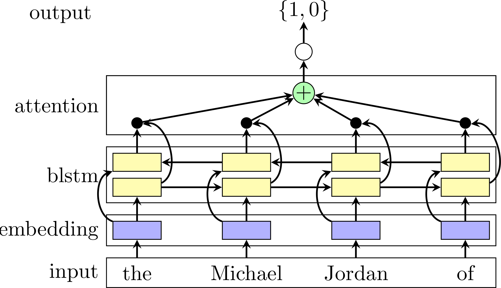
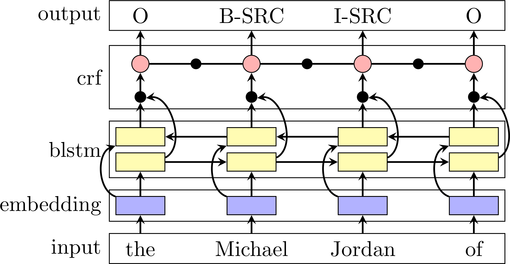

<!doctype html>
<html lang="de">
        <head>
                <meta charset="utf-8">
                <meta name="viewport" content="width=1920, height=1200, initial-scale=1.0, maximum-scale=1.5, user-scalable=no">

                <title>Der Manfred Lehmann unter den rhetorischen Stilmitteln: Data Mining von Long-Tail-Daten am Beispiel der Extraktion Vossianischer Antonomasien</title>

                <link rel="stylesheet" href="../reveal.js/css/reveal.css">
                <link rel="stylesheet" href="../reveal.js/css/theme/simple.css">

        <!-- adjustments for serif.css -->
        <link rel="stylesheet" href="custom.css">

                <!-- Theme used for syntax highlighting of code -->
                <link rel="stylesheet" href="../reveal.js/lib/css/zenburn.css">

                <!-- Printing and PDF exports -->
                <script>
                        var link = document.createElement( 'link' );
                        link.rel = 'stylesheet';
                        link.type = 'text/css';
                        link.href = window.location.search.match( /print-pdf/gi ) ? '../reveal.js/css/print/pdf.css' : '../reveal.js/css/print/paper.css';
                        document.getElementsByTagName( 'head' )[0].appendChild( link );
                </script>
        </head>
        <body>
                <div class="reveal">
                        <div class="slides">
                            <section data-markdown="" data-separator="^\n---\n" data-separator-vertical="^\n--\n" data-charset="utf-8">
<script type="text/template">


# Der Manfred Lehmann unter den rhetorischen Stilmitteln <!-- .element: style="font-size:3em;" -->

## Entdeckung und Extraktion Vossianischer Antonomasien mit Hilfe großer Sprachmodelle

<br />[Robert Jäschke](https://hu.berlin/RJ/)

Humboldt-Universität zu Berlin<!-- .element: style="font-size:0.75em;" -->

<!-- keep me, otherwise this gets interpreted as an ordered list --> 13. September 2024


<small>
<a rel="license"
href="http://creativecommons.org/licenses/by-sa/4.0/"></a> <br/>
Dieses Werk ist lizenziert unter einer <a rel="license" href="http://creativecommons.org/licenses/by-sa/4.0/">Creative Commons Namensnennung – Weitergabe unter gleichen Bedingungen 4.0 International Lizenz</a>.
</small>

<!-- .element: style="margin-top: 5em;" -->

---

# Vorstellung

--


<small>
Bildquelle: [XKCD, Randall Munroe](https://xkcd.com/435) / CC BY-NC 2.5
</small>

--


--

<!-- ## Information Processing and Analytics -->

<!-- .element: style="margin-top: -20px;" -->

--

## Institut für Bibliotheks- und Informationswissenschaft (IBI)

- Humboldt-Universität zu Berlin
- einziges universitäres Institut dieser Art in Deutschland
- ≅ 570 Studierende (300 BA, 100 MA, 150 MA Fernstudium, 20 PhD)


<!-- .element width="600px" -->


---
# Agenda

<br/>

- 🧠 Neuronale Netze und große Sprachmodelle
- 🤔 Was ist eine Vossianische Antonomasie?
- 🛠️  Extraktionsmethoden
- ✨ Ergebnisse
- 💬 Diskussion

---

# Neuronale Netze und große Sprachmodelle

--

## Vom biologischen Neuron zum Perzeptron ...

<!-- .element width="45%" style="box-shadow:none;margin:0px;float:left;" -->

<!-- .element class="fragment" width="45%" style="box-shadow:none;margin:0px;float:right;" -->

--

## ... zum künstlichen neuronalen Netz

<!-- .element style="box-shadow:none;margin:0px;" -->

<!-- mit hinreichend vielen Schichten können wir beliebige Funktionen -->
<!-- beliebig genau approximieren -->

--

## Architekturen für künstliche neuronale Netze

<!-- .element style="width:300px;" -->

<small>Bildquelle: [Fjodor van Veen & Stefan Leijnen](https://www.asimovinstitute.org/neural-network-zoo/)</small>

--

## Architekturen für künstliche neuronale Netze


--

## Anwendungsbeispiele

<!-- .element style="box-shadow:none;margin:0px;width:80%" -->

<!-- .element class="fragment" style="display:inline-block;max-width:49%;float:left;font-size:9pt" -->


<!-- .element style="box-shadow:none;margin:0px;width:80%" -->
<small>
Bildquelle: T. Weyand, I. Kostrikov, J. Philbin (2016) PlaNet – Photo Geolocation with Convolutional Neural Networks. [doi:10.1007/978-3-319-46484-8_3](https://doi.org/10.1007/978-3-319-46484-8_3)
</small>

<!-- .element class="fragment" style="display:inline-block;max-width:49%;float:right;" -->


<!-- .element style="box-shadow:none;margin:0px;width:80%" -->
<small>
Bildquelle: F. Liu, D. Tuo, Y. Xu, X. Han (2023) CoverHunter: Cover Song Identification with Refined Attention and Alignments. [doi:10.1109/ICME55011.2023.00189](https://doi.org/10.1109/ICME55011.2023.00189)
</small>

<!-- .element class="fragment" style="display:inline-block;max-width:49%;float:left;" -->

--

## Textanalyse mit neuronalen Netzen

<!-- .element style="box-shadow:none;" -->

### Details, die wir auslassen <!-- .element class="fragment" data-fragment-index="2" -->
- Festlegung Vokabular (Wörter, Silben, etc.)
- Abbildung auf Zahlen
- Architektur des neuronalen Netzes
- ... und noch einiges mehr

<!-- .element class="fragment" data-fragment-index="2" -->

<!--
- Wo kommen die Vektoren her?
- Wie wird das Vokabular bestimmt?
- Wie sieht dann Eingabe/Ausgabe von NN aus?
-->

--

## Training: Pre-Training → Foundation Model

*Masked Language Modelling* bzw. *Next-Word Prediction*

<!-- .element style="box-shadow:none;" -->

<!-- .element class="fragment" data-fragment-index="2" style="width:250px;box-shadow:none;float:right;" -->

- ergibt *Pre-Trained (Large) Language Model* → **LLM**
- Extraktion von Vektoren für Wörter ergibt *Word Embeddings*
   - semantische Ähnlichkeit durch Nähe im Vektorraum
   - Eingabe für neuronale Netze

<!-- .element class="fragment" data-fragment-index="2" -->

--

## Training: Fine-Tuning

Anpassung des trainierten Netzes auf verschiedene *Domänen* und
*Aufgaben*<br/>
(*Domain and Task Adaptation*, [Gururangan et al. 2020](http://arxiv.org/abs/2004.10964))

### Typische Aufgaben

- Klassifikation (z.B. Spam-Emails erkennen)
- Sequence Tagging (z.B. Namen von Städten in Texten finden)
- Question Answering (z.B. Chatbot)
- ...

### Prinzipielles Vorgehen

- Hinzufügen einer weiteren Schicht
- Training mit annotierten Daten

--

## Beispiele für LLMs

<!-- .element style="box-shadow:none;" -->

<ul style="font-size:12pt">
<li class="diamond">Architektur
<li class="club">Architektur und Modell
</ul>

<small>
Bildquelle: S. Minaee, T. Mikolov, N. Nikzad, M. Chenaghlu, R. Socher, X. Amatriain, J. Gao (2024) Large Language Models: A Survey. [arXiv:2402.06196v2 ](https://arxiv.org/html/2402.06196v2)
</small>


<!--

## Herausforderungen

- Was ist dafür notwendig (annotierte Daten)
- Was sind typische Herausforderungen (annotierte Daten, shortcut
  learning, ...)

-->

--

## Und jetzt?

Wir wissen:
- was ein LLM ist
- wie es trainiert wird
- welche Arten von Aufgaben es gibt
- welche Beispiele für LLMs es gibt

<!-- .element style="margin-bottom:40px" -->


→ Was hat es mit dem *Manfred Lehmann unter den rhetorischen Stilmitteln* auf sich?

---

## Was ist eine Vossianische Antonomasie? (1/2)


<!-- .element width="250px" -->

- Erstbeschreibung als eigenes Phänomen durch Gerhard Johannes Vossius (1577–1649)
- *rhetorisches Stilmittel*, um kurz und prägnant eine Person zu
  beschreiben, indem man ihr die Eigenschaft einer anderen –
  berühmteren, prototypischen – Person zuschreibt


<small>
Bildquelle: <a href="https://commons.wikimedia.org/wiki/File:Gerardus_Johannes_Vossius_(1577-1649),_by_Anonymous.jpg">Wikimedia Commons</a></small>


--


## Beispiele aus freier Wildbahn (1/5)

<br />
<!-- .element width="640px" -->

<br />
= Vittorio Hösle (Quelle: [welt.de](https://www.welt.de/politik/ausland/article120037085/Papst-ehrt-den-Boris-Becker-der-Philosophie.html), 2013)

--

## Beispiele aus freier Wildbahn (2/5)

<br />
<!-- .element width="640px" -->

<br />
= Alice Schwarzer (Quelle: [cicero.de](http://www.cicero.de/berliner-republik/alice-schwarzer-der-erich-honecker-des-feminismus/56963), 2014)

--

## Beispiele aus freier Wildbahn (3/5)

<br />
<!-- .element width="640px" -->

<br />
= Markus Lanz (Quelle: [spiegel.de](http://www.spiegel.de/kultur/tv/markus-lanz-auf-online-petition-folgt-wetten-dass-a-945188.html), 2014)

--

## Beispiele aus freier Wildbahn (4/5)

<br />
<!-- .element width="640px" -->

<br />
= Jim Koch (Quelle: [theatlantic.com](https://www.theatlantic.com/magazine/archive/2014/11/the-steve-jobs-of-beer/380790/), 2014)


--

## Beispiele aus freier Wildbahn (5/5)

<br />
<!-- .element width="640px" style="box-shadow:none;margin:0px;" -->

<br/>

Quelle: [Twitter](https://twitter.com/andrewhunterm/status/1593522991064915968)

--


## Was ist eine Vossianische Antonomasie? (2/2)

- Subphänomen der klassischen ›Antonomasie‹
- morphosyntaktische Auffälligkeiten: Eigennamen erscheinen prädikativ (wie bei der Deonymisierung); Artikelgebrauch vor Eigenname
- Funktionsweise: »bestimmte als salient begriffene Eigenschaften oder Charakteristika des ursprünglichen Namenträgers [werden] auf ein anderes Referenzobjekt übertragen« ([Thurmair 2020](https://doi.org/10.1515/9783110685886-012))
- wir kürzen ›Vossianische Antonomasie‹ als **Vossanto** ab


<!-- .element width="45%" -->

- <span class="vasource">Source</span> → <span
  class="vamodifier">Modifier</span> → <span
  class="vatarget">Target</span> (vgl. [Bergien 2013](http://onomasticafelecan.ro/iconn2/proceedings/1_01_Bergien_Angelika_ICONN_2.pdf))
- <span class="vatarget">Bill Gates</span>, der <span
  class="vasource">Henry Ford</span> des <span
  class="vamodifier">Computerzeitalters</span>

--

## Wesen und Funktion der Vossanto

- Entitäten können sowohl als <span class="vasource">Source</span>
  als auch als <span class="vatarget">Target</span> auftreten,
  z.B. Obama: bis 2011 war er vor allem <span
  class="vatarget">Target</span> und wurde danach immer mehr <span
  class="vasource">Source</span> ([Bergien 2013](http://onomasticafelecan.ro/iconn2/proceedings/1_01_Bergien_Angelika_ICONN_2.pdf))
- eine Funktion der Vossanto ist die *Inkulturation*, d.h. wir erhöhen
  das <span class="vatarget">Target</span> durch eine Referenz auf
  die <span class="vasource">Source</span> und das <span
  class="vamodifier">aktualisierende Signal</span>:
  > »If we refer to
  > Leonard Cohen as the Lord Byron of rock music, we treat a popular
  > singer as a famous romantic poet elevating him and popular songs to
  > a higher level of culture.«
  > <footer>([Holmqvist/Płuciennik 2010](https://doi.org/10.1515/9783110230215))</footer>
- ebd. heißt es aber auch: **»Antonomasia is essentially humanistic
  and anti-computational.«** – d.h., ohne kulturelles
  Hintergrundwissen könne man eine Vossanto nicht verstehen
- insgesamt oszilliert die Vossanto zwischen Erläuterungshilfe und
  ironischem Kommentar; die Erläuterungsfunktion kann aber auch
  negative Effekte haben: »Nichts ist banaler als dieses ewige ›Ute
  Lemper ist die Marlene Dietrich von heute‹, ›Hansjörg Felmy war der
  deutsche Humphrey Bogart‹. Das stimmt nie.« (Fritz J. Raddatz, [*Die
  Zeit*
  44/2007](http://www.zeit.de/2007/44/L-Augustin/komplettansicht))


--

## Manfred Lehmann

<div style="float:left; width:24%;">

<blockquote>
“Einem breiten Publikum wurde Lehmann durch seine Arbeit als Synchronsprecher bekannt. Er ist die Standardstimme von Bruce Willis und Gérard Depardieu”
</blockquote>

</div>

<div style="width: 75%; float:right;">


<small>
Zitat: [Wikipedia](https://de.wikipedia.org/wiki/Manfred_Lehmann)<br/>

Bildquelle: [Sven Wolter](https://commons.wikimedia.org/wiki/User:Sven_Wolter), Lizenz: [Creative Commons by-sa-3.0 de](https://creativecommons.org/licenses/by-sa/3.0/de/legalcode), [verfügbar auf Wikimedia Commons](https://commons.wikimedia.org/wiki/File:Manfred_Lehmann_001.png)
</small>

</div>

---

# Methoden

Ziel: automatische Extraktion aus großen Zeitungskorpora

1. Regelbasierte Identifikation ([Fischer/Jäschke 2019](https://doi.org/10.1093/llc/fqy087))
2. Automatisierte
   1. Identifikation ([Schwab et al. 2019](https://doi.org/10.18653/v1/D19-1647))
   2. Extraktion ([Schwab et al. 2022](https://doi.org/10.3389/frai.2022.868249))

Korpus: »New York Times« 1987–2007 ([Sandhaus 2008](https://catalog.ldc.upenn.edu/LDC2008T19))

--

## Schwierigkeit der Aufgabe

- Annotation von 200 zufällig gewählten Sätzen durch je drei Personen
- Cohen's Kappa von 0.72 zwischen Experte und Annotator:innen:
   - Experte lag (nach Überprüfung) bei den 28 strittigen Fälle richtig
- damit Accuracy von 86%

<br/>

## Recall

- keine echte Evaluation möglich bei 1.8 Millionen Artikeln
- in Zufallsstichprobe von 105 Artikeln fanden wir eine Vossanto

--

## Mitmachen und Nachvollziehen

→ Jupyter Notebook auf Google  <!-- .element style="height:1.5em;box-shadow:none;margin:0px;vertical-align:-.35em" --> Colaboratory


--

## 1. Regelbasierte Identifikation

1. Fokus auf das häufigste Muster *"the <span
   class="vasource">Source</span> of <span
   class="vamodifier">Modifier</span>"*:
  ```python
  re.compile("(\\bthe\\s+([\\w.,'-]+\\s+){1,5}?of\\b)", re.UNICODE)
  ```
   - später Ergänzung um weitere Muster (*"a/an/the <span
   class="vasource">Source</span> of/for/among <span
   class="vamodifier">Modifier</span>"*)
2. Liste von Namen und Aliasen [aller Instanzen der Klasse "human"](https://query.wikidata.org/#%20%20SELECT%20%3Fitem%20%3FitemLabel%20WHERE%0A%20%20%7B%0A%20%20%20%20%3Fitem%20wdt%3AP31%20wd%3AQ5%20.%20%20%20%20%20%20%20%20%20%20%20%20%20%20%20%20%20%20%23%20instance%20of%20human%0A%20%20%20%20SERVICE%20wikibase%3Alabel%20%7B%20%20%20%20%20%20%20%20%20%20%20%20%20%20%20%23%20...%20include%20the%20labels%0A%20%20%20%20%20%20bd%3AserviceParam%20wikibase%3Alanguage%20%22en%22%0A%20%20%20%20%7D%0A%20%20%7D%0A) aus Wikidata
   - Abgleich des Textes zwischen *"the"* und *"of"* gegen diese Liste
3. iterative Erstellung einer [Sperrliste von mehrdeutigen Source-Namen](https://github.com/weltliteratur/vossanto/blob/master/theof/blacklist.tsv)
   - Ignorieren von Kandidaten, deren <span class="vasource">Source</span> in der Sperrliste enthalten ist


→ Anzahl der Kandidaten für das Jahr 1987 reduzierte sich von 641,432 über 5,236 zu 131.

--


## Ergebnis: Häufigkeit der Muster

| | of | for | among | Summe |
|--------:|------:|----:|------:|------:|
| **the** | 2,779 | 24 | 3 | 2,806 |
| **a** | 118 | 59 | 13 | 190 |
| **an** | 14 | 13 | 0 | 27 |
| **Summe** | 2,911 | 96 | 16 | 3,023 |

<small>
Anzahl der Vossantos pro Muster<br/>
(nach manueller Annotation der durch den regelbasierten Ansatz
gefundenen Kandidaten)
</small>

--

## 2. Automatisierte Verfahren

<table class="methods">
  <tr>
    <td>a. Identifikation → <em>binäre Klassifikation</em></td>
    <td>b. Extraktion → <em>Sequence Tagging</em></td>
  </tr>
  <tr>
    <td class="m1t">BLSTM-ATT</td>
    <td class="m2t">BLSTM-CRF</td>
  </tr>
  <tr>
    <td class="m1b"></td>
    <td class="m2b"></td>
  </tr>
  <tr>
    <td class="m3">BERT-CLF</td>
    <td class="m4">BERT-SEQ</td>
  </tr>
</table>


<small>Vorgehen und Bezeichnungen entsprechend [Schwab et al. 2022](https://doi.org/10.3389/frai.2022.868249).</small>


--

## Ausgangslage / Vorbereitung

- Annotierte Daten für Training und Evaluation:
   - 5995 Sätze, davon 3066 mit Vossantos
   - letztere jeweils mit ausgezeichnetem Source, Modifier und Target (soweit vorhanden):
      ```|She|s the *Meryl Streep* of /downtown/```

--

## Erinnerung: Architekturen für künstliche neuronale Netze


--

## Verwendete Architekturen

### (B)LSTM ([Hochreiter und Schmidhuber 1997](https://doi.org/10.1162/neco.1997.9.8.1735), [Schuster/Paliwal 1997](https://doi.org/10.1109/78.650093))

<!-- .element class="fragment" data-fragment-index="1" -->

- (Bidirectional) Long Short-Term Memory
- "Erinnerung" vorheriger Werte; Modellierung von Abhängigkeiten zwischen Eingaben
- bidirektional: in beide Richtungen

<!-- .element class="fragment" data-fragment-index="1" -->

### Transformer ([Vaswani et al. 2017](https://proceedings.neurips.cc/paper_files/paper/2017/hash/3f5ee243547dee91fbd053c1c4a845aa-Abstract.html))

<!-- .element class="fragment" data-fragment-index="2" -->

- "Nachfolger" von (B)LSTMS
- verarbeiten Eingaben parallel
- integrierte Attention ermöglicht Fokussierung auf bestimmte Eingaben
- Grundlage von BERT und GPT

<!-- .element class="fragment" data-fragment-index="2" -->

### CRF ([Lafferty et al. 2001]())

<!-- .element class="fragment" data-fragment-index="3" -->

- Conditional Random Fields
- **kein** neuronales Netz
- probabilistisches Modell zur Modellierung von Beziehungen

<!-- .element class="fragment" data-fragment-index="3" -->

--

## Verwendete vor-trainierte Modelle

- [GloVe](https://github.com/stanfordnlp/GloVe) (Global Vectors for Word Representation), [Pennington et al. 2014](https://doi.org/10.3115/v1/D14-1162)
   - unüberwachtes Lernen (log-bilineare Regression)
- [ELMo](https://allenai.org/allennlp/software/elmo) (Embeddings from Language Models), [Peters et al. 2018](https://doi.org/10.18653/v1/N18-1202)
   - kontextualisiert, BLSTM
- [BERT](https://github.com/google-research/bert) (Bidirectional Encoder Representations from Transformers), [Devlin et al. 2019](https://doi.org/10.18653/v1/N19-1423)
   - Transformer


--

## 2.a BLSTM-ATT (binäre Klassifikation)

1. Eingabe: Satz
2. Repräsentation des Satzes als Matrix von Wortvektoren
   - GloVe und ELMo konkateniert
3. BLSTM + Attention
4. Zusammenführen der Ausgabevektoren
5. Ausgabe: binär (1, 0)

<!-- .element style="width:500px;box-shadow:none;" -->

--

## 2.b BLSTM-CRF (Sequence Tagging)

1. Eingabe: Satz
2. Repräsentation des Satzes als Matrix von Wortvektoren
   - GloVe und ELMo konkateniert
3. BLSTM + CRF
4. Ausgabe: Klasse für jedes Eingabewort

<!-- .element style="width:500px;box-shadow:none;" -->

--

## 2.a BERT-CLF

1. Hinzufügen und Trainieren einer weiteren Schicht ("task adaptation")
1. Aufgabe: binäre Klassifikation von Sätzen

<br/>

## 2.b BERT-SEQ

<!-- .element class="fragment" data-fragment-index="2" -->

1. Hinzufügen und Trainieren einer weiteren Schicht ("task adaptation")
1. Aufgabe: Tagging der Wörter von Sätzen

<!-- .element class="fragment" data-fragment-index="2" -->

---

# Evaluation

--

## Überblick

<!-- .element style="width:862px;box-shadow:none;" -->

- NYT: [New York Times, 1987–2007](https://catalog.ldc.upenn.edu/LDC2008T19), (1,8 Millionen Artikel)
   - aVA: 5995 annotierte Sätze (davon enthalten 3066 eine Vossanto)
   - eVA: erweitert aVA sukzessive um 50000, 100000, … 500000 zufällige negative Sätze
- SIG: [Signal Media One-Million News Articles](https://research.signal-ai.com/newsir16/signal-dataset.html)

--

## Güte der Verfahren (1/2)

<!-- .element style="box-shadow:none;" -->

--

## Güte der Verfahren (2/2)

<!-- .element style="box-shadow:none;" -->


<small>Güte von BERT-SEQ auf den unterschiedlichen Teilen von Vossantos.</small>

--

## Typische Fehler

- falsch positiv:
   - »But should I be the Pierre Cardin of today …?«
   - »an Augusto Pinochet of Chile«
   - »the Greta Garbo of ‘Grand Hotel’«
   - »the Bill Clinton of the 1992 campaign«
- falsch negativ:
   - »the Lana Turner of the 1990’s«
   - »the Harold Stassen of Utah«
   - »a Marx for the twentieth century«

--

## Generalisierbarkeit (1/2)

<!-- .element style="box-shadow:none;" -->


<small>In 60 Millionen Sätzen wurden 9578 Vossanto-Kandidaten gefunden.</small>

--

## Generalisierbarkeit (2/2)

<!-- .element style="width:50%;box-shadow:none;" -->


---


# (inhaltliche) Ergebnisse

<small>Basierend auf dem regelbasierten Ansatz ([Fischer/Jäschke 2019](https://doi.org/10.1093/llc/fqy087)).</small>

--

## zeitliche Verteilung

<!-- .element style="width:80%;box-shadow:none;" -->

--

## häufige Sources


<!-- .element: style="float:right; width: 177px;box-shadow:none" -->

| Anzahl | Source |
|-----:|:------------------------|
| 72 | [Michael Jordan](https://www.wikidata.org/wiki/Q41421) |
| 62 | [Rodney Dangerfield](https://www.wikidata.org/wiki/Q436386) |
| 40 | [Johnny Appleseed](https://www.wikidata.org/wiki/Q369675) |
| 36 | [Elvis Presley](https://www.wikidata.org/wiki/Q303) |
| 36 | [Babe Ruth](https://www.wikidata.org/wiki/Q213812) |
| 25 | [Michelangelo](https://www.wikidata.org/wiki/Q5592) |
| 25 | [Donald Trump](https://www.wikidata.org/wiki/Q22686) |
| 23 | [Pablo Picasso](https://www.wikidata.org/wiki/Q5593) |
| 23 | [Bill Gates](https://www.wikidata.org/wiki/Q5284) |
| 23 | [Madonna](https://www.wikidata.org/wiki/Q1744) |
| 21 | [Jackie Robinson](https://www.wikidata.org/wiki/Q221048) |
| 20 | [P. T. Barnum](https://www.wikidata.org/wiki/Q223766) |
| 20 | [Tiger Woods](https://www.wikidata.org/wiki/Q10993) |
| 19 | [Martha Stewart](https://www.wikidata.org/wiki/Q234606) |
| 17 | [William Shakespeare](https://www.wikidata.org/wiki/Q692) |
| 17 | [Wolfgang Amadeus Mozart](https://www.wikidata.org/wiki/Q254) |
| 17 | [Cinderella](https://www.wikidata.org/wiki/Q13685096) |
| 16 | [Henry Ford](https://www.wikidata.org/wiki/Q8768) |
| 16 | [John Wayne](https://www.wikidata.org/wiki/Q40531) |
| 15 | [Napoleon](https://www.wikidata.org/wiki/Q517) |

--

## »the Michael Jordan of«

<small>
…, 12th men, actresses, Afghanistan, Australia, baseball, BMX racing,
boxing, Brazilian basketball for the past 20 years, bull riding,
college coaches, computer games, cricket, cyberspace, dance, diving,
dressage horses, fast food, figure skating, foosball, football, game
shows, geopolitics, golf, Harlem, her time, his day, his sport, his
team, his time, hockey, horse racing, hunting and fishing, Indiana,
integrating insurance and health care, julienne, jumpers, language,
Laser sailing, late-night TV, management in Digital, Mexico, motocross
racing in the 1980's, orange juice, real-life bulls, recording,
Sauternes, snowboarding, soccer, television puppets, tennis, the
Buffalo team, the dirt set, the Eagles, the game, the Hudson, the
National Football League, the South Korean penal system, the sport,
the White Sox, this sport, women's ball, women's basketball
</small>

* »Romario is the **Michael Jordan** of soccer and Bebeto is the Magic Johnson of soccer« ([1994](http://www.nytimes.com/1994/07/05/sports/world-cup-94-point-proved-hearts-heavy-it-s-time-to-go-home.html))
* »Bonfire, the **Michael Jordan** of dressage horses« ([1998](http://www.nytimes.com/1998/11/05/sports/horse-show-national-thrives-again-with-garden-as-setting.html))
* »Brian Foster, the **Michael Jordan** of BMX racing« ([1998](http://www.nytimes.com/1998/12/27/sports/1998-in-review-champions-all-and-all-in-anonymity.html))
* »The stunt biker Dave Mirra, the **Michael Jordan** of the dirt set« ([2000](http://www.nytimes.com/2000/08/13/weekinreview/this-is-extremely-sporting.html))
* »Cynthia Cooper is the **Michael Jordan**, the Larry Bird, the Magic Johnson of this league« ([2000](http://www.nytimes.com/2000/08/28/sports/sports-of-the-times-cooper-leaving-behind-a-legacy-of-greatness.html))
* »McNabb has been called the **Michael Jordan** of the National Football League« ([2001](http://www.nytimes.com/2001/01/08/sports/on-pro-football-mcnabb-on-the-run-from-start-to-finish.html))


> Barack Obama: »There is a reason you call someone the Michael Jordan
> of [something]. They know what you’re talking about because Michael
> Jordan is the Michael Jordan of greatness. He is the definition of
> somebody so good at what they do that everybody recognizes it.
> That’s pretty rare.«
> <footer>([Washington Post, 22.11.2016](https://wapo.st/2fD96iF))</footer>


--

## häufige Modifier

- **Zeiten** *(his/her/our day/time/generation/era, today, the
  (19)90's, the 19th century)*
- **Länder** *(Japan, China, Brazil, Iran, Mexico, Israel, India, South
  Africa, Poland, Spain)*
- **Sportarten** *(tennis, baseball, hockey, basketball, golf,
  football, racing, soccer, sailing)*
- **Kultur** *(the art world, ballet, jazz, fashion, hip-hop, dance,
  wine, salsa, juggling)*
- mehr auf [vossanto.weltliteratur.net](https://vossanto.weltliteratur.net/emnlp-ijcnlp2019/statistics.html#modifiers)

<!-- .element: style="float:right; width: 40%" -->


| Anzahl | Modifier |
|------:|:-----------------|
| 56 | his day |
| 34 | his time |
| 29 | Japan |
| 17 | China |
| 16 | tennis |
| 16 | his generation |
| 16 | baseball |
| 14 | her time |
| 13 | our time |
| 13 | her day |
| 12 | the Zulus |
| 11 | the 90's |
| 11 | the 1990's |
| 11 | politics |
| 11 | hockey |
| 10 | the art world |
| 10 | Brazil |
| 10 | basketball |
| 10 | ballet |
| 9 | jazz |


--

## Vossanto-Verteilung in Rubriken

| Vossantos | Vossantos | Rubrik | Artikel | Artikel |
|-:|-:|:-|-:|-:|
| 381 | 12.6% | Sports Desk | 174,823 | 9.4% |
| 222 | 7.4% | Metropolitan Desk | 237,896 | 12.8% |
| 220 | 7.3% | Book Review Desk | 32,737 | 1.8% |
| 180 | 6.0% | National Desk | 143,489 | 7.7% |
| 171 | 5.7% | The Arts/Cultural Desk | 38,136 | 2.1% |
| 169 | 5.6% | Arts and Leisure Desk | 27,765 | 1.5% |
| 135 | 4.5% | Magazine Desk | 25,433 | 1.4% |
| 125 | 4.1% | Editorial Desk | 131,762 | 7.1% |
| 117 | 3.9% | Cultural Desk | 40,342 | 2.2% |
| 99 | 3.3% | Movies, Performing Arts/Weekend Desk | 13,929 | 0.8% |
| 96 | 3.2% | Business/Financial Desk | 112,951 | 6.1% |
| 90 | 3.0% | Foreign Desk | 129,732 | 7.0% |
| 78 | 2.6% | Weekend Desk | 18,814 | 1.0% |
| 74 | 2.5% | Leisure/Weekend Desk | 10,766 | 0.6% |
| 72 | 2.4% | Long Island Weekly Desk | 20,453 | 1.1% |
| 69 | 2.3% | Style Desk | 21,569 | 1.2% |
| 57 | 1.9% | Financial Desk | 206,958 | 11.2% |
| 44 | 1.5% | Arts &amp; Leisure Desk | 6,742 | 0.4% |
| 42 | 1.4% | The City Weekly Desk | 22,863 | 1.2% |
| 41 | 1.4% | Connecticut Weekly Desk | 17,034 | 0.9% |


--

## Tiere als *Target*

* »A rugged cat, in a fluffy sort of way,
  **[Morris](https://en.wikipedia.org/wiki/Morris_the_Cat)** has been
  the Clark Cable of the catnip crowd.«
  ([1988](http://www.nytimes.com/1988/05/29/business/luring-56-million-ailurophiles.html?pagewanted=all))
* »**[Sea Hero](https://en.wikipedia.org/wiki/Sea_Hero)** is the Bobo
  Holloman of racing«
  ([1993](http://www.nytimes.com/1993/08/18/sports/sports-of-the-times-the-derby-is-history-to-sea-hero.html))
* »**<a href="https://en.wikipedia.org/wiki/Bonfire_(horse)">Bonfire</a>**,
  the Michael Jordan of dressage horses«
  ([1998](http://www.nytimes.com/1998/11/05/sports/horse-show-national-thrives-again-with-garden-as-setting.html))

<br />
## Plüschtiere als *Source*

* »Jean-Claude Van Damme, the **[Energizer
  Bunny](https://en.wikipedia.org/wiki/Energizer_Bunny)** of action
  stars, just never stops trying.«
  ([1994](http://www.nytimes.com/1994/09/11/movies/the-annotated-calendar-film.html))

--

## Nicht individualisierbare Referenzen

<br />
* »the [God, King, Queen, Satan, Emperor, Oracle, Shogun, Czar, Sultan, Buddha] of«

<br />
<br />

## Mythologische und fiktive Figuren

<br />
* »the [Santa Claus, Midas, Godzilla, Pied Piper, Energizer Bunny, Jupiter, Icarus] of«

--

## Oszillieren zwischen *Target* und *Source*

<br />
* »**Even [Michael] Jordan isn’t always Jordan.** The last time he
  retired, to play baseball, the Chicago Bulls’ owner, Jerry
  Reinsdorf, called him the **Babe Ruth** of basketball.« ([NYT,
  17.01.1999](http://www.nytimes.com/1999/01/17/weekinreview/ideas-trends-they-re-sort-of-like-mike.html))
* Bergien 2013 bringt als Beispiel Barack Obama, dessen Name ab 2011
  seltener als <span class="vatarget">Target</span> vorkommt: »the
  name Obama has changed from a target into a source name« (S. 23)
* das Oszillieren von Entitäten zwischen <span
  class="vatarget">Target</span> und <span
  class="vasource">Source</span> verdient es, auf breiterer Datenbasis
  studiert zu werden

--

## Individuelle Person/Figur als Source, Firma/Verein/Band/Ort als Target

<br />
* »**Sturm, Ruger** is the **Benedict Arnold** of the gun industry,« said Aaron S. Zelman, owner of the Patriot Distribution Company, a Milwaukee-based concern that sells a semiautomatic pistol as well as products such as assault vests and tear gas.« ([1989](http://www.nytimes.com/1989/07/14/us/gun-import-ban-enriches-small-us-arms-makers.html?pagewanted=all))
* »Also on hand is **Aerosmith**, the **Dorian Gray** of rock bands, to serve the same purpose Alice Cooper did in the first film.« ([1993](http://www.nytimes.com/1993/12/10/movies/review-film-it-s-wayne-and-garth-schwinging-once-again.html))
* »**Bolt Beranek &amp; Newman** has been the **Forrest Gump** of high technology, […]« ([1995](http://www.nytimes.com/1995/07/17/business/innovator-is-leaving-the-shadows-for-the-limelight.html))
* »For most of this century, the **Hudson** has been the **John Barrymore** of rivers, noble in profile but a sorry wreck.« ([1996](http://www.nytimes.com/1996/07/05/arts/happy-trails-along-the-hudson.html))
* »the **National Collegiate Athletic Association**, the **Kenneth Starr** of sports« ([1998](http://www.nytimes.com/1998/04/05/sports/backtalk-a-few-parting-shots-for-the-rangers-brass.html))

--

## ... und ein Favorit

<!-- .element height="300px" -->
<!-- .element height="300px" -->

»When we introduced Word in October 1983, in its first incarnation it
was dubbed the **Marquis de Sade** of *word processors*, which was not
altogether unfair.«
([1993](http://www.nytimes.com/1993/09/26/business/sound-bytes-to-this-microsoft-executive-the-suite-smells-of-success.html))

<small>
Bildquelle:
[Wikimedia
Commons](https://en.wikipedia.org/wiki/Marquis_de_Sade#/media/File:Marquis_de_Sade_portrait.jpg),
[Nathan Toasty](http://toastytech.com/guis/word115.html)
</small>


---

# Diskussion

--

## Fazit

- regelbasiertes Verfahren: einfach aber robust, Nachvollziehbarkeit für
  Nicht-Expert:innen
- BLSTM: automatisiert Finden, gute Ergebnisse auf vorgefilterten Texten
- BERT: State-of-the-Art-Ansatz mit guten Ergebnissen auf unbekannten Texten
- klare Gewinner: vortrainierte BERT-Modelle
- striktes Sequence Tagging ähnlich gut wie CLF-Baseline
- Generalisierbarkeit: neue Muster + Sources
- größte (bis dato) bekannte Sammlung an Vossianischen Antonomasien
- zahlreiche neue Spezialfälle, bei denen beispielsweise das <span
  class="vatarget">Target</span> keine Person ist (z.B. *the John
  Barrymore of rivers*, *the Forrest Gump of high technology* oder *the
  Marquis de Sade of word processors*)


--

## Anwendungsbeispiele

- maschinelle Übersetzung, Fact Extraction
   - *"Today, the German Ronaldo quit his career."*
- Disambiguation von Entitäten und Koreferenz-Auflösung
   - *"Jimmy Johnson is the Madonna of college football ..."*
- Question Answering
- kreative Texterzeugung (Überschriften von Spielberichten, Aufwerten von automatisch generierten Artikeln)

--

## Herausforderungen

- Erkennung syntaktischer Varianten (→ [Schwab et al. 2023b](https://aclanthology.org/2023.icnlsp-1.10))
   - *"the <span class="vamodifier">ADJECTIVE</span> <span class="vasource">ENTITY</span>"* (*"the <span class="vamodifier">new</span> <span class="vasource">Michael Jordan</span>"*)
   - *"the <span class="vasource">ADJECTIVE/NOUN</span> sort/version/equivalent of"* ("*<span class="vatarget">New South Wales</span>, the <span class="vamodifier">Georgian</span> equivalent of <span class="vasource">deep space</span>"*, *"an <span class="vamodifier">adult</span> version of <span class="vasource">capture the flag</span>"*)
- Identifikation der Target-Entitäten (→ [Schwab et al. 2023a](https://sighum.files.wordpress.com/2023/03/latech-clfl-2023-unofficial-proceedings.pdf))
- andere Sprachen als Englisch (→ [Schwab et al. 2022b](https://aclanthology.org/2022.icnlsp-1.33))
- Sparsity (→ Label-Kosten/-Menge, Evaluation des Recalls)
- Semantik


--

## Daten, Code und mehr

<!-- .element style="width: 100%; box-shadow:none;" -->

https://vossanto.weltliteratur.net/

--

<!--

qrencode -s15 -o images/qrcode.png "https://slides.igada.de/2024-09-13-hu/"

-->

<div style="float:right; width:24%;">
  <a href="https://slides.igada.de/2024-09-13-hu/"></a>

  <p style="font-size:.45em;padding-top:0px;margin-top:0px;">
    <a href="https://slides.igada.de/2024-09-13-hu/">https://slides.igada.de/2024-09-13-hu/</a>
  </p>

  <a href="https://www.bibsonomy.org/"></a>

  <a href="http://weltliteratur.net/"></a>

  <p style="font-size:.62em;padding-top:10px;margin-top:0px;">
    <a href="https://vossanto.weltliteratur.net/">https://vossanto.weltliteratur.net/</a>
  </p>


</div>


<!-- .element: style="width:100%;margin-bottom:0px;" -->

<!-- .element: style="width:70%;margin-bottom:0px;margin-top:0px;" -->

<small>
Bildquelle: [XKCD, Randall Munroe](https://xkcd.com/1256) / CC BY-NC 2.5
</small>

<!-- .element: style="margin-top:0px;" -->


<ul>
<li class="clap">Dank an
  [Frank Fischer](https://lehkost.github.io/) und
  [Michel Schwab](https://www.ibi.hu-berlin.de/de/institut/personen/schwab)
<li class="mail"> [robert.jaeschke@hu-berlin.de](mailto:robert.jaeschke@hu-berlin.de)
<li class="web">https://hu.berlin/RJ
</ul>


<!-- .element: style="width: 70%; float:left;" -->


</script>
                            </section>
                        </div>
                </div>

                <script src="../reveal.js/lib/js/head.min.js"></script>
                <script src="../reveal.js/js/reveal.js"></script>

                <script>
                        // More info https://github.com/hakimel/reveal.js#configuration
                        Reveal.initialize({
                                history: true,

                                // More info https://github.com/hakimel/reveal.js#dependencies
                                dependencies: [
                                        { src: '../reveal.js/plugin/markdown/marked.js' },
                                        { src: '../reveal.js/plugin/markdown/markdown.js' },
                                        { src: '../reveal.js/plugin/notes/notes.js', async: true },
                                        { src: '../reveal.js/plugin/highlight/highlight.js', async: true, callback: function() { hljs.initHighlightingOnLoad(); } }
                                ]
                        });
                </script>
        </body>
</html>
